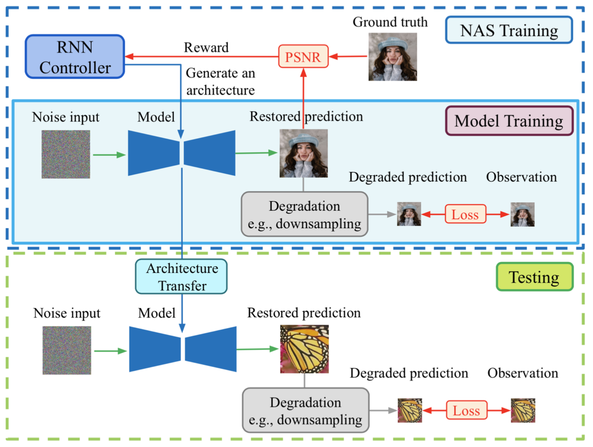

NAS-DIP: Learning Deep Image Prior with Neural Architecture Search
Abstract
Recent work has shown that the structure of deep convolutional neural networks can be used as a structured image prior for solving various inverse image restoration tasks.
Instead of using hand-designed architectures, we propose to search for neural architectures that capture stronger image priors.
Building upon a generic U-Net architecture, our core contribution lies in designing new search spaces for (1) an upsampling cell and (2) a pattern of cross-scale residual connections.
We search for an improved network by leveraging an existing neural architecture search algorithm (using reinforcement learning with a recurrent neural network controller).
We validate the effectiveness of our method via a wide variety of applications, including image restoration, dehazing, image-to-image translation, and matrix factorization.
Extensive experimental results show that our algorithm performs favorably against state-of-the-art learning-free approaches and reaches competitive performance with existing learning-based methods in some cases.
Citation
Yun-Chun Chen*, Chen Gao*, Esther Robb, and Jia-Bin Huang, "NAS-DIP: Learning Deep Image Prior with Neural Architecture Search", in European Conference on Computer Vision, 2020.
*: equal contribution
BibTex
@inproceedings{NAS-DIP,
author = {Chen, Yun-Chun and Gao, Chen and Robb, Esther and Huang, Jia-Bin},
title = {NAS-DIP: Learning Deep Image Prior with Neural Architecture Search},
booktitle = {European Conference on Computer Vision (ECCV)},
year = {2020}
}

Network Architecture

Overview of NAS-DIP
References
- • Ulyanov et al. Deep Image Prior. In CVPR, 2017.
- • Heckel et al. Deep Decoder: Concise Image Representations from Untrained Non-convolutional Networks. In ICLR, 2019.
- • Athar et al. Latent Convolutional Models. In ICLR, 2019.
- • Gandelsman et al. "Double-DIP": Unsupervised Image Decomposition via Coupled Deep-Image-Priors. In CVPR, 2019.
- • Aittala et al. Computational Mirrors: Blind Inverse Light Transport by Deep Matrix Factorization. In NeurIPS, 2019.